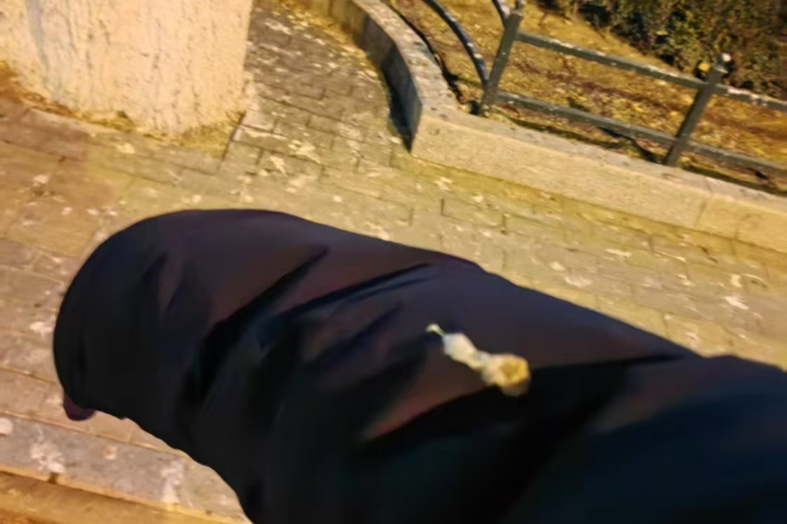
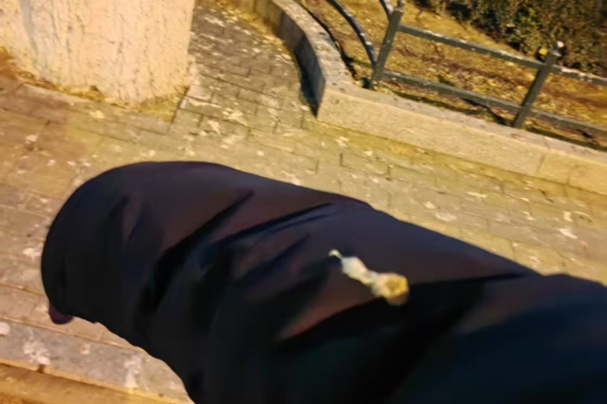

水木清华的深冬与初春
每一次来到这里，都能唤起许多美好的回忆，又能够发现许多新鲜的东西，心情不同，时间不同，景色也不同。
记得刚到这里的时候，也才将将春节之后。京城的街道充满了三种氛围：节日的热闹，假期的冷清，外来旅客潮的繁忙——巧了，我也是这众多旅人中的一员，听着火车站大哥亲切的京腔，似乎很久都没回家了，今年有幸在华北（家的地方），感受到了发自内心的愉悦与放松。
喜欢家里的饺子，喜欢家里的炒饭炒面，喜欢门外吆喝的小商小贩，喜欢小区门口的庆丰包子铺，喜欢地铁口的煎饼果子、加俩蛋。
人间烟火气，最抚凡人心
或者说，最抚凡人心的，是熟悉的、家乡的烟火气。五道口这里，是恩师的母校，也是故友求学的地方，虽时运不济恰恰错峰难以见一面故友，不过我相信，来日方长，未来我应该还会来五道口访问交流，希望到那时我们都摆脱了升学的压力，在饺子铺一叙过往吧。
热情好客的寒潮与零下十度
回想起来，倒是第一次因为学业而来到京城，不想麻烦亲朋好友，便匆匆租了个房了事。好巧不巧，海淀的初春也遭遇了难得一遇的大寒潮，尽管我裹得严严实实（但是面部、双耳没裹上），也是被冻得丢了半条命，肚子痛得打滚，在租住的小房子里，听着耳旁嗤嗤的窗户声，点了一份疙瘩汤当晚饭（还有美团送药），草草了事。

恰好这段时间的中期过节了，想不到第一次在北京过元宵节是这样的方式，人挤人。


在清华忙忙忙的日子
相较于康乐园，似乎清华园也差不多大，当然如果康乐园的家属区感觉占比大一点。冬日（或者初春）的清华简直就一人民公园，一眼看上去和我家门口的公园感觉差不多，寥寥几个学生、打卡的游客，以及我这种无业游民哈哈（旅客？学生？应该算visiting student吧）。在这里的时候，每天上午9点多来，忙到晚上9点多10点回去，我摸鱼的时候学了Latex、Markdown，真的挺有意思；除此之外其实主线任务是学习Linux开发、Arm开发、free5GC核心网架构，其实第一次开会我真的啥也没听懂，倒是快走人的时候才知道——哦，原来我是这么干的啊！


在FIT的无线中心，还挺热，在平常应该穿毛衣的情况下，我在里面基本都是短袖，以至于每次楼下取外卖的时候，门口大爷会一脸错愕的盯着我：“小伙子，火力是旺！”此外，我在知乎还看到了一个问题：《为什么FIT楼这么热》，倒是个性化推送了。
学校大，食堂离我在的FIT楼远，因此我吃了20多天外卖（海淀的饭真的有点贵的…）。其实有的生活过的挺苦逼的，比如：
Case1 早上没有报备入校咋办？
很正常，系统甚至有延迟，五道口旁边有一个咖啡店，也有喜茶、霸王茶姬，“欢迎来chang”是我这段时间听到最多的话，因为好喝、便宜、人少、离学校和车站近，所以奶茶店学习挺常见的哈…

或者出去摸鱼，因为电脑电源只能撑几个小时哈，真不是我不想干活（doge

Case2 苦逼生活？咋个苦法？
其实只是相对的苦不是绝对的苦，只是不如中大的生活罢了。压力大，任务繁重，好几次连外卖都没顾得上吃，楼道里自动售货机的面包、泡面凑合凑合……

但是好景不长，之后就被发配到基站的屋子里，和一堆服务器大铁疙瘩待一块去了，一看就是我们臭理工男的工作室，鉴于FIT楼建成已久，所以基建也没那么新，谁说的清华的厕所超级豪华的给我站出来！😭

Case3 被鸟屎砸咋办
巧了我有发言权😅
根据辅修课程刚学的外部环境分析~我分析分析哈：
- 宏观环境：冬天清华乌鸦巨多，加上假期人员少，因此时令性聚集
- 行业环境：FIT楼和东南门常年乌鸦聚集
- 竞争环境：乌鸦是保护动物，海淀奈何不了
- 市场分析：周围洗衣店疯狂点赞
不扯了，几张图，可视化一下：


猜猜这是什么？


嘿嘿，是乌鸦！！！全是乌鸦，闹麻了……😅然后就，我一周被连续砸中了三次（第二次是溅到的，没拍上）：
 
吃啥
探店+食堂，食堂怒坑师兄50大洋嘿嘿，发两张没掏钱蹭饭的图片：

还去了方砖厂炸酱面，免费续面条真不错，就是面一般般，可能网红属性就这样：


结束与告别
用UERANSIM和free5GC、分布式核心网搭建了通信系统，学到了很多，写了个文档，我想想，等之后有时间我写给文档（脱敏版）上传github，就叫《全网最详细版free5gc和ueransim核心网通信链路部署搭建手册》啦！（如果我不懒没有鸽的话）
汇报
清华的老师：恭喜你完成了一个有意义的short stay，希望你学到了东西！
时间过得好快，中午被实验室的师兄们拉去清华的某个餐厅点菜聚餐（倒是挺贵，不过师兄们未来应该不会差钱的），当天晚上最后和师兄在金谷园吃了顿饺子，
ps：诶我天，饺子馆的酱油鸡真好吃！！！

告别
收拾东西，感慨诸多，感谢这一段经历，感谢老师、师兄的帮助。其实很多时候人都会被他人灌输的“高价值”事物洗脑，以为某些东西看上去“高级”或者“先进”，实际上祛魅的最好方式是真正去体验一下，去感受一下，才能知道是否和他人描述的相符，这也有点像小马过河吧。
没有调查就没有发言权。
这次实地的“考察”让我感觉到，清华，我国工科教育当之无愧的殿堂，事实上里面的学生和大家也没什么不同，只是一批更聚焦、更能坚守的同龄人，在深耕的领域有自己的taste，在朋辈身旁有更大的peer pressure（这可能有优有劣）；清华的设施也没想象中那么新规或者那么老旧，一切都是刚刚好，甚至和中大都很像。
说了这么多，权当老夫痴言乱语罢了。好了，已经迫不及待想回广州吃肠粉了，拜了个拜！